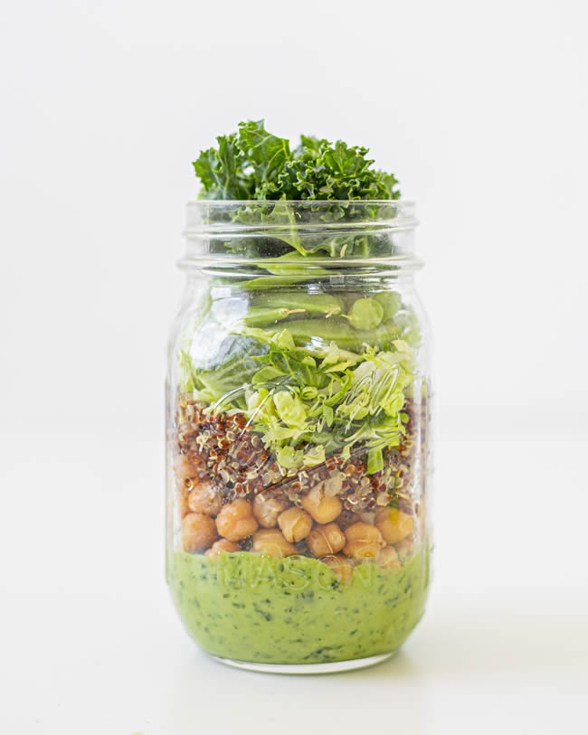

Green Goddess Chicken

Description
This recipe is only here becuase it was the answer to an NYTimes puzzle my dughter and I were solving, and we never knew this was a thing. The recipe is taken from BBC Food
here
Ingredients
For the Green Goddess sauce
- 15g/½oz fresh parsley, roughly chopped
- /⅓oz fresh dill, roughly chopped
- 5g fresh chives, roughly chopped
- 5g fresh tarragon, roughly chopped
- 65g/2½oz Greek-style yoghurt
- 65g/2½oz mayonnaise
- 1 tbsp lemon juice
For the chicken
- 1 small avocado, diced
- 50g/1¾oz cucumber, seeds removed and diced
- 150g/5½oz cooked chicken, roughly chopped
- salt and freshly ground black pepper
- salad leaves or 4 slices bread, to serve
Steps
Do this:
- Place the parsley, dill, chives and tarragon in a food processor along with the yoghurt, mayonnaise and lemon juice. Blend on high until you have a vibrant green sauce.
- Put the avocado, cucumber and chicken into a large bowl. Pour the green sauce into the same bowl and stir well to combine. Season with salt and pepper.
- Spoon the chicken over prepared salad leaves or onto sliced bread to make a sandwich.
Home